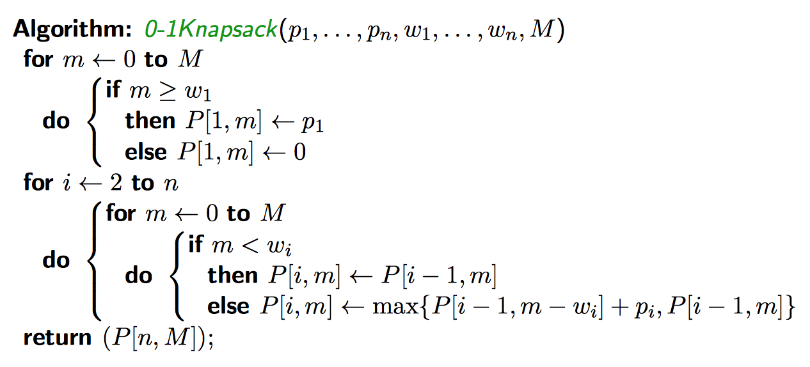
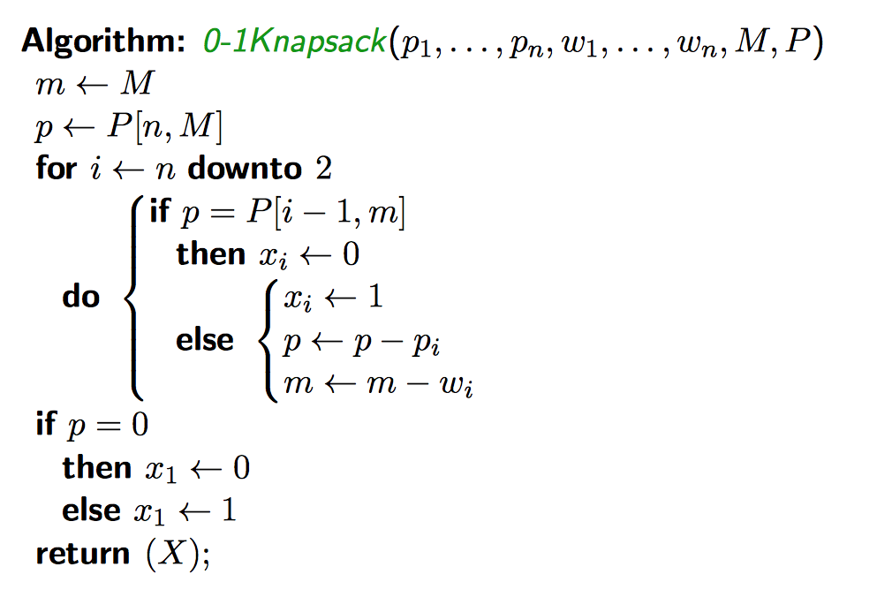

Profits \(P\) and weights \(W\) and a capacity \(M\) exist. An \(n\)-tuple \(X\) exists where \(\sum_{i=1}^n w_i x_i \le M\). We require that \(x_i \in \{0, 1\}, 1 \le i \le n\).
Consider \(x_n\). Two cases exist:
Subproblems \(S(I)\): Let \(P(i, m)\) be the optimal solution to the subproblem consisting of:
In total, we get \(n(M+1)\) subproblems
Recurrence relation:
\[P(i, m) = \begin{cases}
\max\left\{P(i-1, m), P(i-1, m-w_i)+p_i\right\}, &m \ge w_i, i \ge 2\\
P(i-1, m), &m \lt w_i, i \ge 2\\
\end{cases}\]
Base cases:
\[P(1, m) = \begin{cases}
p_1, &m \ge w_1\\
0, &m \lt w_1\\
\end{cases}\]

Assuming unit cost operations: \(\Theta(1)\) time additions and subtractions
But neither is polynomial complexity:
\[\begin{align*}
I &= (p_1, ..., p_n, w_1, ..., w_n, M)\\
size(I) &= \sum_{i=1}^n \log_2 p_i + \sum_{i=1}^n \log_2 w_i + \log_2 M\\
size(I) &\ge n\\
\end{align*}\]
\(M\) is exponentially large compared to \(\log_2 M\). Therefore we cannot express the problem in polynomial time with an \(M\) in it when it is exponentially large compared to the problem instance.
The first step only fills in the table. If we want to know what is actually in the knapsack, we have to trace back through the table to see what items we added.

A list of coin denominations \(D\) exists, and a positive target sum \(T\). Find an \(n\)-tuple of non-negative integers sich that \(T=\sum_{i=1}{n} a_i d_i\) such that the number of coins \(n\) is minimized.
Let \(N(i, t)\) denote the optimal solution to the subproblem consisting of the first \(i\) coin denominations \(d_1, ..., d_i\) and target sum \(t\). Let \(A(i, t)\) denote the number of coins of denomination \(d_i\) used in the optimal solution to this subproblem.
For a given target sum \(T\), consider coins of denomination \(d_n\). Let \(a_n\) be the number of coins. Then \(0 \le a_n \le \left\lfloor\frac{T}{d_n}\right\rfloor\).
If we use \(a_n\) coins of denomination \(d_n\), then the optimal solution for \(I\) is \(a_n\) plus the optimal solution using the first \(n-1\) coin denominations, for the targt sum \(T-a_n d_n\).
We then have the subproblems \(N(i, t), i=1,...,n, 0 \le t \le T\). There will be \(n(T+1)\) subproblems.
We get the recurrence relation:
\[N(i, t) = \min\left\{j+N(i-1, t-jd_i), 0 \le j \le \left\lfloor\frac{t}{d_i}\right\rfloor\right\}\]
If \(i=1\), we get the base case \(N(1, t) = t\).
Traceback options:
The minimum number of coins required for \(I\) is \(N[n, T]\).
Traceback: The number of coins of denomination \(d_n\) in the optimal solution is \(A[n, T]\), so set \(a_n = A[n, t]\). Then, set \(t \leftarrow t-a_n d_n\). Then find the number of coins of denomination \(d_{n-1}\) in the optimal solution \(A[n-1, t]\). Repeat.
We observe that we are filling in an \(n \times (T+1)\) table, so the size of the table is \(\Theta(nT)\). But the problem instance is \(I = (d_1, ..., d_n, T)\). Since \(size(I) = \sum_{i=1}^n \log_2 d_i + \log_2 T\), \(T\) is an exponention function of \(log_2 T\). This implies that we do not have a polynomial time algorithm.
There are two sequences \(X = (x_1, ..., x_m)\) and \(Y = (y_1, ..., y_n)\) over some infinite alphabet \(\Gamma\). Find a maximum length sequence \(Z\) that is a subsequence of both \(X\) and \(Y\).
\(Z= (z_1, ..., z_l)\) is a subsequence of \(X\) if there exists indices \(1 \le i_1 \lt ... \lt i_l \le m\) such that \(z_j = x_{i_j}, 1 \le j \le l\). Similarly, \(Z\) is a subsequence of \(Y\) if there exists indices \(1 \le h_1 \lt ... \lt h_l \le n\) such that \(z_j = y_{h_j}, 1 \le j \le l\).
e.g. \(X=\texttt{gdvegta}, Y=\texttt{gvcekst}\). \(LCS(X,Y)=\texttt{gvet}\).
Let \(X' = (x_1, ..., x_{m-1})\). Let \(Y' = (y_1, ..., y_{n-1})\)
Cases:
Consider all possible prefixes of \(X\) and all possible prefixes of \(Y\).
Define \(x[i, j]\) to be the length of the LCS of \((x_1, ..., x_i)\) and \((y_1, ..., y_j)\), \(0 \le i \le m, 0 \le j \le n\).
\[C[i,j] = \begin{cases} 1 + c[i-1, j-1], &x_i = y_i \land i,j \ge 1\\ \max\{c[i-1, j], c[i, j-1]\}, &x_i \ne y_i \land i,j \ge 1\\ 0, &i=0 \lor j=0\\ \end{cases}\]
Each cell in the table references the cells to the left and above, so if we compute rows top down and columsn left to right, each subproblem will already have a solution.
To construct the tables, it takes \(\Theta(mn)\). The traceback procedure is \(O(m+n)\).
Given \(n\) points \(q_1, ..., q_n\) in the Euclidean plane that forms a convex \(n\)-gon \(P\). Find a triangulation of \(P\) such that the sum \(S_C\) of the lengths of the \(n-3\) chords is minimized. Alternatively, find the triangulation \(P\) such that the sum \(S_p\) of the perimeters of the \(n-2\) triangles is minimized (if you solve one of these, you have solved both, since if \(L\) is the perimeter of \(P\), \(S_p=L+2S_C\)). We will work with the second version.
Aside: Using Catalan Numbers, \(C_n = \frac{1}{n+1} \binom{2n}{n}\) is the number of triangulations of a convex polygon with \(n+2\) vertices.
The edge \(q_nq_1\) is in a triangle with a third vertex \(q_k\) whree \(k \in \{2, ..., n-1\}\).
For a given \(k\), we have:
The optimal solution will consist of the optimal solutions for subproblems 2 and 3, along with the triangle in 1.
For \(1 \le i \lt j \le n\), let \(S[i, j]\) be the optimal solution to the subproblem consisting of the polygon with vertices \(q_i, ..., q_j\). Let \(\Delta(q_i, q_k, q_j)\) be the perimeter of the triangle with vertices \(q_i, q_k, q_j\).
We have the recurrence relation:
\[S[i,j] = \min\{\Delta(q_i, q_k, q_j) + S[i,k] + S[k,j] : i \lt k \lt j\}\]
The base cases are given by \(S[i, i+1] = 0 \forall i\).
Compute all \(S[i,j]\) with \(j-i=c\) for \(c=2,3,...,n-1\).